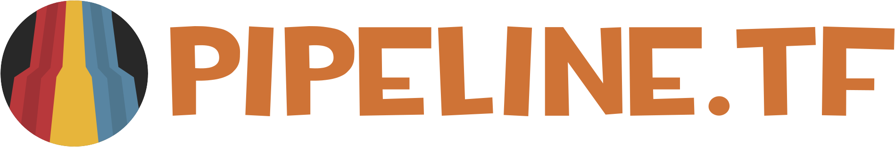

This project respects everyone's freedom of expression as well as freedom of association.
See something you don't like? TF2 has built-in tools to avoid spicy sprays/decals or mute players you don't want to talk to.
45 Minute Server Timer
Random Crits Enabled
Random Bullet Spread Enabled
All Talk Enabled
Spectator Mode Available
Disabled Spawn Glows (Spy Buff)
Scramble Teams
Change/Extend Map
